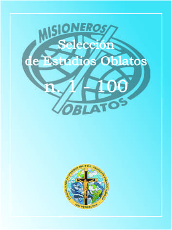

ÍNDICE DE AUTORES ------------------ ÍNDICE DE MATERIAS
Siguiendo las huellas de los Apóstoles
Mons. De Mazenody la vida religiosa
“Aferrar todo el bien que se nos propone”
Los pobres y las almas mas abandonadas según Mons. de Mazenod
El ministerio parroquial en la Congregación mientras vivió el Fundador
La Eucaristía en la vida y en el pensamiento de Eugenio de Mazenod [2]
El apostolado de las peregrinaciones y Mons. de Mazenod
La vocación misionera de Eugenio de Mazenod
El servicio de la Iglesia en la vocación oblata
El celo por todas las iglesias en Mons. de Mazenod.
La “sequela Christi” en la vida oblata
“Parva Congregatio” Alcance de la expresión según Mons. de Mazenod
La perspectiva misionera de Mons. de Mazenod
El Oblato evangelizadossegún el carisma del B. Eugenio de Mazenod
Capellanías aceptadas en los comienzos de la Congregación
Amador apasionado de Jesucristo
Obras de enseñanza en la Congregación, en vida del Fundador
El amor del Fundador a la Iglesia
Las “dos partes” en la vida del hombre apostólico según monseñor de Mazenod
El servicio religioso en los santuarios marianos
Nuestra oblación y la oblación de Cristo Sacerdote
“Hombres del Papa” Una “nota” actual de nuestro servicio misionero
Eugenio de Mazenod permanece marcado por la vocación misionera
Problemática de la vida comunitaria evangélica
El anuncio de la Palabra de Dios según Mons. de Mazenod. El ministerio evangélico de la Congregación
Apuntes sobre el carácter sacerdotal de la Congregación según el Fundador y la tradición oblata
Las misiones según Mons. de Mazenod
Derogaciones a las reglas generales en la predicación de los oblatos, durante la vida del Fundador.
Regina Congregationis Nostrae. Reflexiones sobre nuestra vocación y nuestro espíritu mariano
El hermano oblato según el fundador y la tradición oblata
La sangre del Salvador Un tema central de la doctrina espiritual de Mons. de Mazenod
Monseñor de Mazenod: un hombre y un mensaje para la misión de nuestro tiempo
La muerte y la resurrección de Cristo y su celebración litúrgica. Textos de Mons. E. de Mazenod
El Beato Eugenio de Mazenod y el Sacerdocio
Algunos rasgos de la comunidad a la luz de la vida apostólica
Ensayo acerca del carácter mariano de nuestra espiritualidadNuestra tradición mariana oblata [1]
Lugar de los hermanos coadjutores en la Congregación
Espíritu de Oblación Ensayo histórico
El beato Eugenio de Mazenod, hombre de deseos, y el oblato de hoy
Los Oblatos, hombres de los Obispossegún Mons. de Mazenod
Nota sobre la orientación profunda de la devoción mariana en nuestro venerado Fundador
Espiritualidad oblata según las nuevas Constituciones y Reglas
Ideal sacerdotal de Eugenio de Mazenod
Los Hermanos al principio de la Congregación (1818- 1843)
La vocación del Hermano oblato ayer y hoy
El Hermano en las congregaciones clericales Síntesis histórica
Vida y ministerio de los Hermanos Oblatos hoy
El Fundador y la evangelización en Francia
La evangelización “ad gentes” la visión y la practica del Fundador
Trabajo evangelizador de los oblatos en Ceilán durante el siglo XIX
Respuesta de los oblatos del oeste del Canadá al enfoque “misionero” de Mons. de Mazenod
La evangelización y los oblatos del este de Canadá
La evangelización en Mons. Vidal Grandin, o.m.i.
Respuesta de los oblatos en Estados Unidos al llamamiento del Fundador (Provincia del Sur)
La evangelización y los Capítulos Generales de 1972, 1974 y 1980
La evangelización en las diferentes ediciones de nuestras constituciones y reglas (extracto)
La evangelización entre los oblatos, hoy
Eugenio de Mazenod y la Iglesia
Hacia un nuevo estilo de formación desde los pobres
Presencia de María en el carisma y en la misión de los Misioneros Oblatos de María Inmaculada
Proyección socio-politica del mandamiento del amor
Tablas Generales de los números 1 a 30 1980 - 1990
Presencia de los oblatos en América latina
Desafíos actuales para la región oblata de América Latina
Primeras actuacionesde los Misioneros Oblatos en América Latina: Mexico 1849-1884; 1903-1914.
Misión del Pilcomayo la primera fundación oblata en Sudamérica: 1925
La espiritualidad oblata en Latinoamérica
¿Se mostró la Santísima Virgen al beato Eugenio?La experiencia del 15 de agosto de 1822
Temas fundamentales de la teología de Mons. de Mazenod
Monseñor de Mazenod y los oblatos: magnitud de una vocación misionera
El Beato José Gerard y la identidad oblata
El beato José Gerard, o.m.i. padre de la iglesia del Lesoto
María en la vida y la misión del beato José Gerard
Los Oblatos en Uruguay Una pequeña historia
La comunidad misionera en la iglesia primitiva
Comunidad, communio y apostolado en la iglesia primitiva
La comunidad religiosa, signo de esperanza
La misión en comunidad apostólica
Comunidad y misión según monseñor de Mazenod y según las primeras generaciones de oblatos en Europa
La misión en comunidad apostólica según nuestras constituciones y reglas
1992 Los oblatos y su misión en América latina
Informe de la región de América latinaal capitulo general de 1992
Comunidad y Misión en los Capítulos Generales
La comunidad apostólica según los superiores generales
Los Hermanos en la Congregación de los OMI: Ojeada histórica
ANEXO Criterios para el discernimiento de la vocación de Hermanos [2]
Como han entendido los oblatos su carisma: Exposición histórica
Monseñor de Mazenod ¿Se retrato a si mismo en el Prefacio?
Carlos Domingo Albini, o.m.i.1790 - 1839
Nuestra formación primera: ejes y prioridades
El acompañamiento personal en el cuadro de la formación oblata. Concepciones y prácticas
Presentación Génesis del Encuentro de Uspantán
Yo vine para que estén llenos de vida Homilía de la misa de apertura
Necesidad eclesial, desde mi experiencia como Obispo de El Quiche
Documento final Pastoral Indígena
Los Retiros Anuales en la vida del Fundador
El ideal del martirio en el carisma del beato Eugenio de Mazenod
La beatificación de Mons. Eugenio de Mazenod Antes - Durante – Después
Superar fronteras: La misión de la vida religiosa en la perspectiva del sínodo [1]
América latina al empezar el segundo milenio
A los superiores mayores de la región latinoamericana
Impresiones de la Región latinoamericana - Logros y Desafíos –
Oblación en Monseñor de Mazenod
Carta a un muchacho que quiere conocernos
La canonización de Eugenio de Mazenod [1]
Eugenio de Mazenod, hoy Permanencia de su visión y de su dinamismo misionero [2]
Audacia: El Fundador y su época
La comunidad apostólica según el fundador
Laicos asociados en el contexto eclesial
Eugenio de Mazenod: un santo para nuestro tiempo
TABLAS GENERALES de los números 31 a 50 [1] (1990 - 1996)
Iglesia y sacerdocio en la formación de Eugenio de Mazenod
Segunda Parte:Puntos de vista sobre la aportación de San Sulpicio
Iglesia y sacerdocio en la formación de Eugenio de Mazenod(Tercera Parte)
El Viernes Santo de 1807 ¿Mito o realidad?
San Eugenio de Mazenod “Un hombre para todos los tiempos”
San Eugenio y la comunidad apostólica oblata
La evangelización de los pobres en vísperas del tercer milenio
Evangelizar un mundo secularizado Una mirada desde Europa
Análisis de la Síntesis desde una óptica Norteamericana
Evangelización de los pobres e interculturalidad
Evangelizar a los Pobres en el Umbral del Tercer Milenio: Un punto de vista africano
Síntesis del Cuestionario de 1997: Una Reacción desde América Latina
La evangelización de los pobres en vísperas del tercer milenio: Un punto de vista asiático
Nuevas fundaciones oblatas desde el capítulo general de 1986
Situación de algunas nuevas misiones oblatas
Evangelizadores para una época poscristiana
La nueva cultura y la formación de los jóvenes oblatos
La evangelización de la nueva cultura
Reflexiones ante el tercer milenio
Colaboración entre musulmanes y cristianos
Las minorías en las sociedades modernas: un desafío para los oblatos
El ashram oblato Ashram Aanmodaya - Enathur, Kancheerpuram, India
Misiones limítrofes de Mindanao y Sulu
La pobreza en África: respuesta de los oblatos
Eugenio de Mazenod y los pobres: una temática perenne
El viernes santo de Eugenio de Mazenod
TABLAS GENERALES de los números 51-60 (1997-2000) [1]
Beato José Cebula, o.m.i. (1902-1941) Formador de la juventud oblata y mártir de su sacerdocio
Eugenio de Mazenod Obispo de Marsella (1837-1861)
Una experiencia ‘política’ oblata en Uruguay
Relectura del itinerario espiritualde San Eugenio de Mazenod
Acerca de las primeras misiones de Eugenio de Mazenod y sus compañeros (1816-1823)
Iniciativas misioneras de san Eugenio de Mazenod
Desafíos de la misión en el mundo actual
Orar 15 días con Eugenio de Mazenod
Las comunidades, marcos de vida y de ministerio al comienzo de la Misión de Provenza (1816-1823)
San Eugenio y la vocación de los casados a la santidad
Cómo ilustró el carisma oblato con su vida y ministerio el Siervo de Dios Ovidio Charlebois
Cómo ilustró el carisma oblato en su vida y ministerio el Siervo de Dios Hno. Antonio Kowalczyk
El Padre Marcello Zago y la misión oblata “ad extra”
El P. Marcelo Zago y la Región Latinoamericana
El Padre Zago y la familia oblata
¿Cómo san Eugenio llegó a ser santo?(Sus medios de santidad)
Contra vientos y mareas Mazenod y los suyos de 1816 a 1823
La misión entre los jóvenes Nota sobre la Regla 7 b
Una depresión del Fundador (1829-1830)
San Eugenio de Mazenod en su contexto histórico: político, socio-económico y religioso
Oblatos, un signo de inmensa esperanza en la era de la mundialización - reflexión espiritual –
Reclutamiento de los Misioneros de Provenza de 1816 a 1823 Discernimiento y perseverancia
Notre-Dame du Laus y el ministerio de los Oblatos en los santuarios marianos
Los primeros oblatos, 1816-1824
Responder a las necesidades de salvación
El noviciado y la formación de los candidatos entre los Misioneros dé Provenza (1816-1823)
El Cardenal Juan María Rodrigo Villeneuve, o.m.i. Testimonio [23]
El padre Leo Deschâtelets Unos recuerdos (En el 30° aniversario de su muerte)
“Hay solo amor” (La conversión de Eugenio, un desafío a los jóvenes de hoy)
San Eugenio de Mazenod y el Sagrado Corazón
Discípulo y apóstol. Reflexiones sobre la vida apostólica
La humildad de la Congregación y de los Oblatos
La vida espiritual de Eugenio de Mazenod en los orígenes de su fundación misionera (1814-1816)
Como pasaron a la vida religiosa los misioneros de Provenza (mayo 1818-1 noviembre 1818)
Un oblato entre los pobres del Brasil
Misioneros oblatos, víctimas de la persecución religiosa en España (1939)
Los sufrimientos del corazón de San Eugenio de Mazenod
La Jornada de oración por la paz, Asís 1986, vista por Marcello Zago
Juventud de hoy en la onda del carisma oblato. Esbozo de síntesis
Sufrimientos y curaciones de los jóvenes en Lourdes
Nota: san Eugenio y la juventud
María en el anuncio misionero de los Oblatos de María Inmaculada ayer y hoy
Martirologio de los oblatos polacos 1939-1945
Las Santas Reglas: el “depósito sagrado” según el padre José Fabre, segundo Superior general
A los jóvenes, ante el bicentenario del carisma oblato
Itinerario espiritual de San Eugenio
Misioneros: Hombres llamados a santificarse y a santificar
La espiritualidad misionera de Eugenio de Mazenod
Un nuevo llamamiento a la conversión el profetismo de la vida consagrada